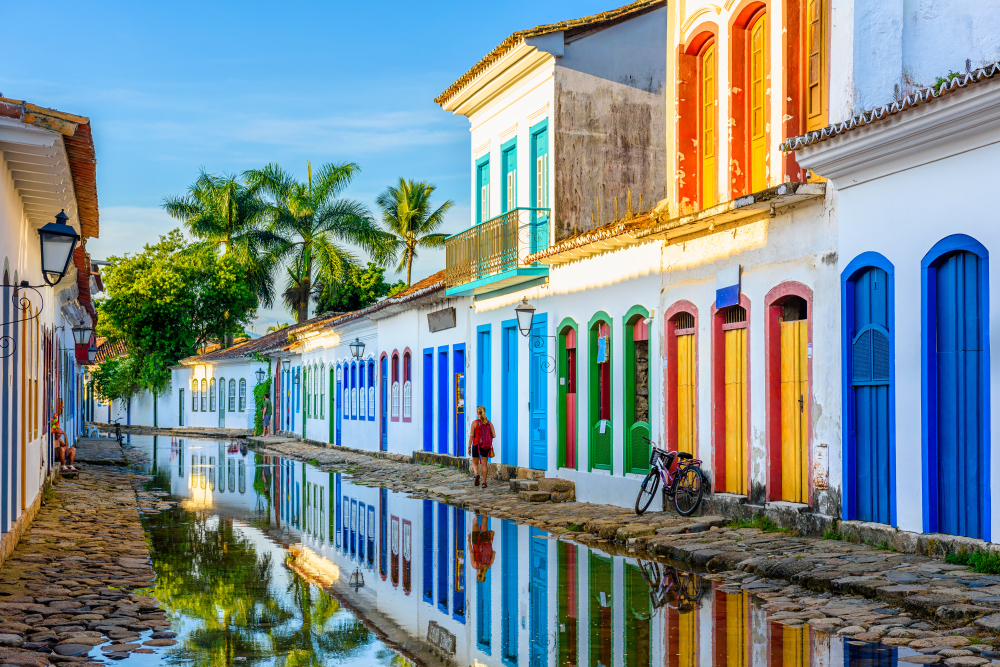
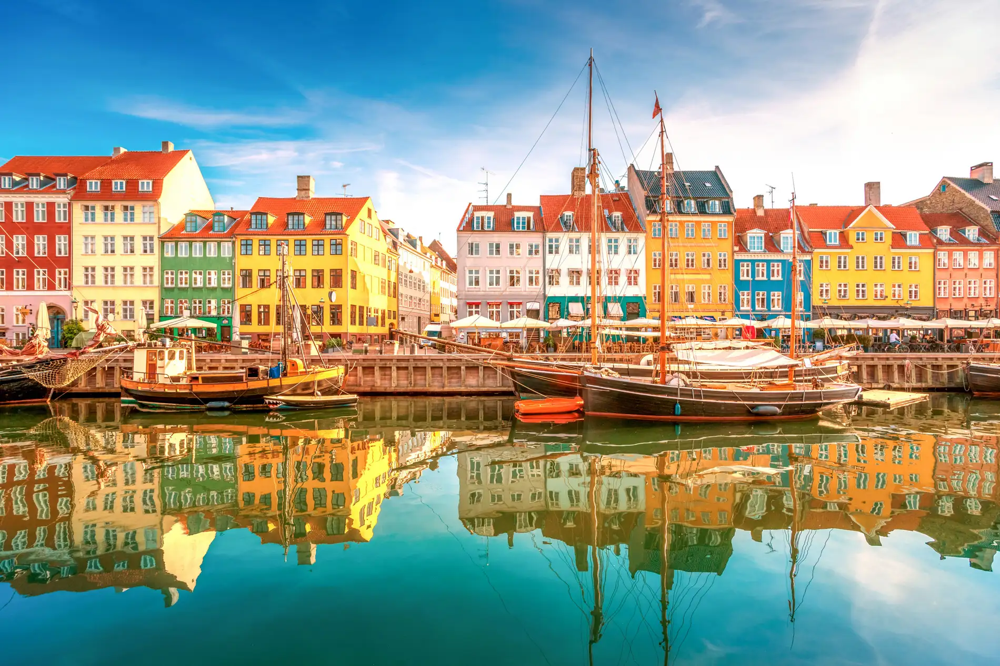

Destinos em destaque
Encontre os melhores destino seguros para mulheres!

Paraty
Paraty, localizada no Rio de Janeiro conta com diversas opções de passeios de barco para conhecer as praias e as cachoeiras ao redor. O centro histórico da cidade tem um charme especial, com suas casas coloniais e portas coloridas. Também há ótimos restaurantes e a tradicional Gabriela, cachaça famosa da região, feita com cravo e canela.

Munique
Ao combinar cultura, diversas opções de parques, museus e uma série de experiências gastronômicas, Munique, localizada na Alemanha, lidera o ranking de lugares para viajar sozinha. A cidade é considerada uma das mais seguras da Europa (andar à noite não costuma ser um problema, mesmo para mulheres desacompanhadas), com baixos índices de criminalidade. Além disso, o transporte público é eficiente, o que facilita o deslocamento entre uma região e outra.

Copenhague
Além de ser um dos países mais seguros do mundo, com baixas taxas de criminalidade, a Dinamarca também possui leis que protegem os direitos das mulheres e combatem a violência de gênero, tornando-se um ótimo destino para elas. Copenhague é uma cidade pequena, fácil de explorar a pé e conta com uma boa infraestrutura turística, com vários hotéis, restaurantes e lojas.
Madri
Segundo o Numbeo, plataforma colaborativa com dados de cidades e países ao redor do mundo, Madri, localizada na Eespanha, tem um índice de segurança de 87,2 e um índice de criminalidade de 24,4. Ou seja, é considerado um destino seguro para turistas. Madri ocupa o 3º lugar na lista por razões como ausência de discriminação legal no Índice Georgetown para Mulheres, Paz e Segurança. Também tem pontuações altas para igualdade de gênero, segurança ao caminhar sozinha à noite e qualidade das atividades.
Florianópolis
Conhecida como a "Ilha da Magia", Florianópolis, localizada em Santa Catarina, combina segurança e infraestrutura turística. A cidade tem um dos menores índices de criminalidade entre as capitais brasileiras, o que permite às mulheres caminharem mais tranquilamente por bairros como Lagoa da Conceição e Jurerê Internacional, que possuem policiamento frequente. Floripa, como é popularmente chamada, tem praias paradisíacas, vida noturna agitada e trilhas incríveis.